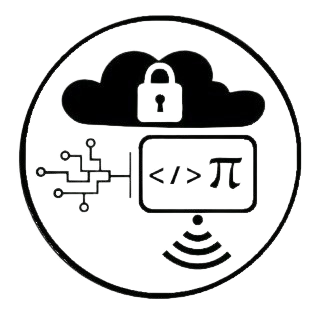

Modelos de Transformación Empresarial
De la investigación empresarial a la propuesta de transformación estratégica: Pasado → Presente → Futuro.

¿Cómo Funciona el Proyecto Integrador?
No son tres trabajos aislados. Es un único caso empresarial que se irá construyendo, profundizando y transformando durante el semestre:
Punto de Partida
El primer parcial establece la situación histórica y formula una propuesta de transformación desde el pasado («si hubiéramos estado allí…»).
Contraste Real
El segundo parcial permite volver al presente, contrastar lo propuesto con lo que verdaderamente ocurrió e incorporar nuevos conceptos.
Proyección Prospectiva
El examen final permite proyectar una transformación futura con mayor profundidad, creatividad y solidez técnica.
Progresión Integral
La calidad visual, narrativa, conceptual y técnica deberá crecer de forma sustancial de un corte al siguiente.
Integración Continua
Durante el semestre aparecerán nuevos temas y herramientas que deberán incorporarse progresivamente al caso.
La Lógica del Proyecto: Tres Momentos
El estudiante asume progresivamente el rol de consultor y analista estratégico de transformación organizacional:
PASADO
¿Qué estaba ocurriendo y qué habríamos hecho nosotros?
- Video ejecutivo-creativo (5-7 min)
- Propuesta escrita formal de respaldo
- Diagnóstico del contexto histórico
- Respuestas a las 5 preguntas clave
PRESENTE
¿Qué ocurrió realmente y dónde está hoy?
- Producto audiovisual ampliado (10-15 min)
- Documento de contrastación con la realidad
- Aciertos, diferencias y oportunidades no previstas
- Nuevos modelos teóricos integrados
FUTURO
¿Hacia dónde debería transformarse en el futuro?
- Producto final integrador culminante
- Propuesta prospectiva de transformación
- Demostración de viabilidad e impacto
- Producto significativamente superior
Matriz de Progresión Dimensional
| Dimensión | Primer Parcial (Pasado) | Segundo Parcial (Presente) | Examen Final (Futuro) |
|---|---|---|---|
| Análisis | Comprender pasado y detectar necesidad. | Contrastar y evaluar transformación real. | Diseñar y justificar próxima transformación. |
| Conceptos | Fundamentos ya estudiados. | Nuevos temas incorporados. | Integración total de aprendizajes. |
| Creatividad | Narrativa y audiovisual dinámico. | Mayor profundidad visual y argumentativa. | Producto integrador de nivel superior. |
| Tiempo de Video | 5–7 min (Obligatorio) | 10–15 min (Orientativo) | 15–20 min (Orientativo) |
| Rol Asumido | Consultor antes del cambio. | Analista de la realidad. | Consultor estratégico del futuro. |
Corte 1 — PASADO: «Si hubiéramos estado allí…»
El grupo viaja imaginariamente al pasado antes de la transformación relevante y asume el rol de consultores contratados por la dirección:
Información Histórica
Datos comprobables sobre la empresa en la época seleccionada: operaciones, clientes y modelo.
Interpretación Crítica
Diagnóstico fundamentado del grupo sobre cuellos de botella y amenazas competitivas.
Solución Hipotética
Solución formulada por el grupo como consultores: qué transformarían y cómo generarían valor.
Las 5 Preguntas Fundamentales a Responder
¿Cuál era la situación antes de la transformación?
Diagnóstico del modelo de negocio, procesos operativos, clientes y forma en que creaba y entregaba valor.
¿Cuál era el principal problema u oportunidad?
Identificar con fuentes y hechos verificables el punto de quiebre que amenazaba su competitividad.
¿Qué transformación propondríamos como consultores?
Qué transformarían y cómo, qué recursos requeriría y con qué propósito estratégico.
¿Por qué es transformación y no solo tecnología?
Demostrar cómo trasciende la simple digitalización de herramientas y reconfigura procesos y personas.
¿Cómo cambiaría la forma de crear, entregar y capturar valor?
Impacto en la propuesta al cliente (crear valor), en la eficiencia y canales (entregar valor) y en ingresos y sostenibilidad (capturar valor).
Guión y Estructura del Video (5 a 7 Minutos)
Estructura minuto a minuto para el video ejecutivo-creativo dirigido a la dirección de la empresa:
Haz clic en cada tramo de la barra de 7 minutos para revisar qué debe contener:
EL PASADO: El Punto de Partida Histórico
Presentar la situación de la empresa antes de la transformación: modelo de negocio tradicional, quiénes eran sus clientes, cómo operaban sus procesos y cuál era su forma histórica de generar valor.
¿Qué significa «Tipo TikTok»?
Significa comunicación ágil, dinámica y visual; no significa copiar bailes ni modas vacías. Formatos recomendados:
Pitch ante Junta Directiva
Simular una sesión ejecutiva ante los socios o la presidencia de la empresa.
Noticiero Empresarial
Reportaje periodístico que investiga el antes y después de la organización.
Reunión de Crisis
Dramatización del punto de quiebre donde se contratan los consultores.
Mini Documental
Narrativa histórica profunda apoyada en material gráfico y audiovisual.
Viaje en el Tiempo
El grupo viaja al año del pasado para asesorar a la gerencia sobre disrupciones.
Gráficos & Modelos Propios
Infografías dinámicas, esquemas de procesos y diagramas bien explicados.
Estructura de la Propuesta Escrita (10 Componentes Mínimos)
La propuesta escrita funciona como respaldo formal y verificable del trabajo realizado (no es una transcripción del video):
Material de Apoyo y Contenido Descargable · Corte 1
Archivos, guías y plantillas oficiales publicadas por el docente para el desarrollo del primer corte.
SEGUNDO PARCIAL — PRESENTE: «¿Qué ocurrió realmente?»
El grupo regresa del pasado al presente de la empresa para contrastar lo hipotético con la realidad histórica:
De la Propuesta Imaginada a la Realidad de la Empresa
En este segundo corte, el grupo regresará al presente de la empresa seleccionada en el Taller 3. Deberá analizar qué ocurrió realmente en la historia de la organización, contrastarlo con la propuesta que formularon en el primer parcial e incorporar los nuevos temas y modelos teóricos desarrollados en clase.
Objetivos y Misiones del Segundo Parcial:
1. Contrastar con la Realidad
Comparar la propuesta hipotética del primer parcial con la transformación real que efectivamente ejecutó la empresa.
2. Aciertos y Brechas
Identificar coincidencias, diferencias, aciertos del grupo y oportunidades que el mercado no previó.
3. Nuevos Conceptos
Incorporar los nuevos conceptos, modelos y marcos teóricos explicados en el aula durante el corte.
4. Profundización Holística
Profundizar en tecnología, procesos, personas, clientes, estrategia, capacidades dinámicas y creación de valor.
5. Madurez Audiovisual
Elevar el nivel narrativo, visual y técnico audiovisual acorde al incremento de tiempo (10 a 15 min).
Material de Apoyo y Contenido Descargable · Corte 2
Archivos, guías y casos de estudio compartidos por el docente para el segundo parcial.
EXAMEN FINAL — FUTURO: «¿Cuál debería ser la próxima transformación?»
El grupo utiliza todo el conocimiento construido durante el semestre para proyectar una transformación estratégica hacia el futuro:
El Producto Integrador Culminante del Semestre
El grupo utilizará todo el conocimiento construido durante el semestre para proyectar una transformación futura de la empresa. La expectativa institucional es que el producto final sea significativamente superior a los productos de los primeros cortes tanto en profundidad conceptual como en calidad técnica.
Objetivos y Misiones del Examen Final:
1. Partir de la Situación Actual
Analizar la situación presente y la posición competitiva que la empresa ocupa hoy en el mercado global.
2. Detectar Retos Futuros
Identificar un reto emergente, ventana de oportunidad o disrupción tecnológica y social hacia adelante.
3. Mayor Profundidad
Diseñar una propuesta de transformación de mayor envergadura, rigurosidad metodológica y ambición estratégica.
4. Integración Total
Integrar de forma armónica todas las herramientas, modelos y marcos aprendidos a lo largo de la materia.
5. Viabilidad y Valor
Demostrar viabilidad económica y técnica, innovación real, impacto positivo y creación sostenible de valor.
Material de Apoyo y Contenido Descargable · Corte 3
Archivos y formatos estratégicos suministrados por el docente para el examen final.
Rúbrica General de Evaluación
Criterios institucionales y pesos porcentuales de referencia aplicados para evaluar tanto el producto audiovisual como la propuesta escrita:
| Criterio Evaluado | Qué se espera | Peso % |
|---|---|---|
| Investigación y evidencia | Fuentes pertinentes, confiables y suficientes; evidencia sólida para sustentar las afirmaciones realizadas. | 15% |
| Comprensión del contexto empresarial | Situación de la empresa, problema estructural, ventana de oportunidad y análisis del entorno competitivo. | 15% |
| Análisis de la transformación | Qué cambió, por qué, cómo se implementó y qué dimensiones organizacionales fueron afectadas. | 20% |
| Aplicación conceptual | Uso correcto, riguroso y articulado de los conceptos, marcos y modelos teóricos de la asignatura. | 15% |
| Propuesta de transformación | Coherencia con el diagnóstico, pertinencia, grado de innovación, viabilidad técnica e impacto real. | 20% |
| Comunicación y creatividad | Estructura narrativa, claridad ejecutiva, recursos audiovisuales dinámicos y calidad visual del video. | 10% |
| Trabajo en equipo y dominio | Participación equilibrada de todos los miembros y conocimiento real del caso por todo el grupo. | 5% |
| Total Ponderación del Corte | 100% | |
Checklist del Primer Parcial
Marca cada punto antes de realizar la entrega oficial. Tu progreso queda guardado automáticamente en tu navegador:
Estado de Preparación
0 de 10 completadosLas 8 Reglas de Oro del Proyecto
Normas metodológicas y éticas de cumplimiento obligatorio durante todo el semestre:
Misma Empresa Todo el Semestre
La empresa será la misma durante todo el proyecto, salvo autorización del docente.
Punto de Partida: Taller 3
El trabajo parte obligatoriamente de la investigación realizada en el Taller 3.
Sustentación con Fuentes
Toda afirmación sobre hechos históricos debe poder sustentarse en una fuente verificable.
Diferenciación Estricta
La propuesta hipotética debe diferenciarse claramente de los hechos reales de la empresa.
Propósito Visual
No se evaluará la cantidad de efectos especiales, sino su aporte real a la comunicación.
Dominio Colectivo & Individual
Todos los integrantes deben conocer y dominar el caso ante preguntas y sustentaciones.
Uso Ético de la IA
La IA, si se utiliza, no reemplaza la investigación, el análisis ni la autoría intelectual del grupo.
Cumplimiento de Pautas
Las instrucciones de duración (5-7 min), formato y fechas deberán cumplirse con exactitud.
Competencias Profesionales que Desarrollarás
Investigación con Evidencia
Sustentar afirmaciones con datos y fuentes confiables sobre empresas reales.
Pensamiento Analítico
Identificar causas raíz, cuellos de botella y oportunidades estratégicas.
Enfoque Multidimensional
Articular tecnología, procesos, personas, clientes, estrategia y valor.
Visión Prospectiva
Comprender el pasado, interpretar el presente y proyectar el futuro.
Comunicación Ejecutiva
Presentar ante directores con claridad, síntesis y calidad audiovisual.
Trabajo Colaborativo
Coordinación armónica y dominio integral del caso por cada estudiante.
Panel de Administración de Recursos de Apoyo
Adjunta y publica material complementario, guías de trabajo, plantillas y casos de estudio para cada uno de los 3 módulos del proyecto. Los archivos subidos estarán disponibles de inmediato para su descarga por parte de los estudiantes.
Archivos de Apoyo · Módulo 1 (Corte 1: Pasado)
Publica y administra los documentos que los estudiantes podrán descargar en la vista del Corte 1.